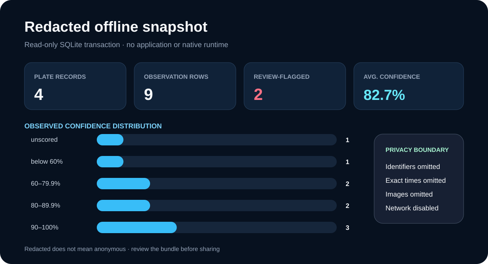

Redacted offline report
A static report generated from one coherent read-only SQLite transaction. It contains observed aggregate records, not a camera, recognition, or deduplicated-event claim.
Privacy mode: redacted-v1. Raw identifiers, exact times, profiles, source names, reasons, filesystem paths, and source images were not selected for export. Review aggregate attributes before sharing.
Plate records4
Observation rows9
Review flagged2
Average confidence82.7%

Confidence observations
- unscored1
- below 60%1
- 60–79.9%2
- 80–89.9%2
- 90–100%3
Redacted record detail
| Record | Observations | Average confidence | Peak confidence | Review state |
|---|---|---|---|---|
| Record 001 | 3 | 93.8% | 96.2% | Review flagged |
| Record 002 | 3 | 85.1% | 100.0% | Review flagged |
| Record 003 | 2 | 80.2% | 82.0% | No review flag |
| Record 004 | 1 | 58.3% | 58.3% | No review flag |
Interpretation limits
- Redaction reduces exposure but does not guarantee anonymity.
- Observation rows may include legacy duplicates and are not deduplicated events.
- Identifiers, timestamps, profiles, source names, reasons, paths, and images are omitted.